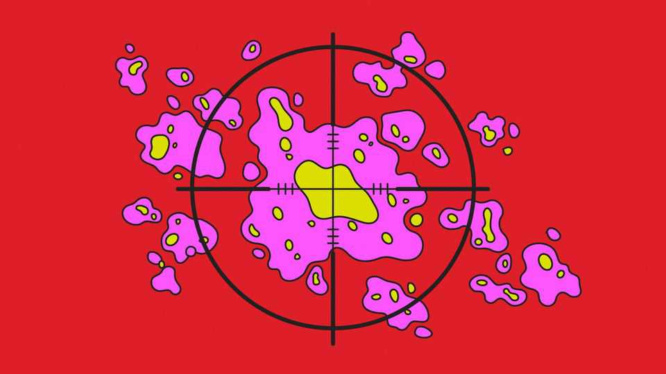

It now seems possible to vaccinate against cancer
The latest results are promising, but not yet definitive

Aug 27th 2026
First, pancreatic cancer. Now melanoma. A treatment for the former, announced in May, at the American Society of Clinical Oncology Annual Meeting, and which this column wrote about on June 12th, has been fast-tracked through America’s drug regulator and received approval on August 26th. Meanwhile, on August 19th, interim results of trials for a treatment for the latter—using mRNA technology developed for vaccination against infections—suggest that it is possible to vaccinate someone against their own cancer.
In recent years an entire branch of medicine—immunotherapy—has been deployed to encourage the immune system to detect and destroy tumours. One of its oldest approaches, though, vaccination, has never really worked. Billions have been spent, yet the field is notorious for its broken promises.
The idea of a cancer vaccine is to alert the immune system to mutated proteins, known as neoantigens, found in tumours. If the system clocks these as foreign it will eliminate cells that have them. The idea could not be made to work, though. Focusing on a single protein was not enough, for a tumour could stop making it. And some early vaccines were, in any case, aimed at the wrong proteins. But an important reason for failure was that tumours often suppress an immune response. The arrival of drugs called checkpoint inhibitors, which stop this suppression, revived interest in cancer vaccines. Would such vaccines work, researchers wondered, if given alongside checkpoint drugs?
One idea was to create a personalised vaccine based on neoantigens unique to the tumour of interest. This was once thought hard because vaccines take so long to make, but mRNA technology permits the creation of new vaccines in weeks. The result is intismeran, developed by two American firms, Moderna and Merck. Trials of this alongside a checkpoint inhibitor, have been under way in melanoma for several years. The interim results show the vaccine is indeed working, and by implication that the neoantigen idea works, too.
What is known from the partial results released so far is that in patients who had had their melanomas surgically removed the vaccine slowed recurrence of the disease. First the caveats: delaying re-occurrence might extend overall survival, but it also might not. And, because neither the scale of the response nor the cost of the treatment are known, it may turn out that the vaccine produces a marginal benefit at great expense. In addition, melanomas are among the most immune-system-provoking cancers known—so what works in this case might not do well in others.
Clinicians are nonetheless excited. Elad Sharon, a medical oncologist at the Dana-Farber Cancer Institute in Boston, says it is “promising for the field of melanoma and cancer as a whole”. More encouraging still, it points to a better way of preventing cancer’s recurrence. Current treatments sometimes leave microscopic clusters of cells behind that later return as tumours. A vaccine-boosted immune system could hunt these down. Vaccination may also reduce the need for harmful treatments like radiation and chemotherapy.
Moderna and Merck are rushing through trials on other tumours including lung, bladder and kidney cancers. In coming years the results of these, and full results of the melanoma trial, will allow assessment of the scale of the breakthrough—if breakthrough it indeed turns out to be. ■
After a free, evidence-based guide to health and wellness? Sign up to our weekly Well Informed newsletter.